CP343-1(6GK7343-1EX30-0XE0) 或 CP343-1 Advanced(6GK7343-1GX30/1GX31-0XE0) 或 CP343-1 Lean(6GK7343-1CX10-0XE0) 支持 I Device 模式，故可使用 CP343-1 作为智能 IO 设备和 S7-1200 做 Profinet 通信。本例中将 S7-1200 做为控制器，连接作为智能 IO 设备的 CP343-1 实现 Profinet 通信；下面详细介绍使用方法。
硬件：
软件：
CP343-1 的 PN 接口连接 S7-1200 的 PN 接口，这种方式可以分 3 种情况来操作，具体如下：
CPU1217C 作为 IO 控制器，CP343-1 作为 IO 设备，使用 TIA Step7 V17 在一个项目中操作，详细步骤如下。
使用 STEP7 V17 创建一个新项目，并通过“添加新设备”组态 S7-1200 站 PLC_1，选择 CPU 1217C，添加子网并设置 IP 地址，确认设备名称，本示例中 S7-1200 设备名称是 plc_1。如图 1 所示。
图 1 在新项目中插入 S7-1200 站
组态 S7-1200PLC 后，默认为 IO 控制器模式，无需设置。 如图 2 所示。
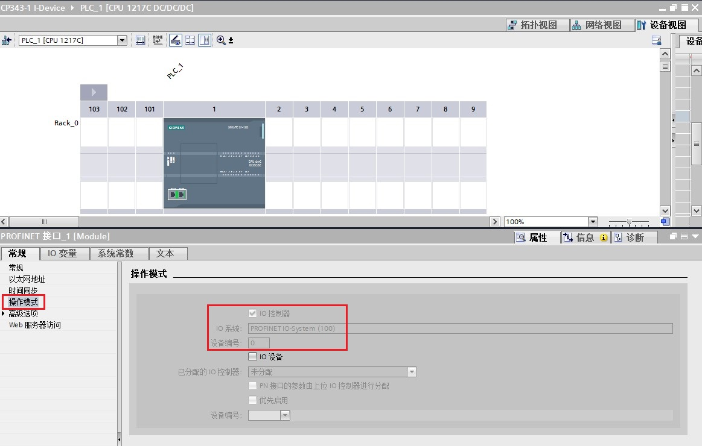
图 2 S7-1200的操作模式
使用 STEP7 V17 创建一个新项目，并通过“添加新设备”组态 S7-300 站 PLC_2，选择 CPU314C-2 PN/DP V3.3 和 CP343-1 V3.0；对 CP343-1 分配子网并设置 IP 地址，并确认设备名称，本示例中 CP343-1 设备名称是 plc_2.cp343-1_1 。如图 3 所示。

图 3 在新项目中插入 S7-300 和 CP343-1
CP343-1 作为 IO 设备，需要将其操作模式设置为 IO 设备，将 IO 设备分配给控制器 PLC_1。
在“智能设备通信”的“传输区”创建 IO 通信区，控制器的 QB2~7 共计 6 个字节传送到 IO 设备的接收块中偏移量数据 0~5 ；控制器的 IB2~7 共计 6 个字节读取 IO 设备的发送块中偏移量数据 0~5 ，如图 4 所示。

图 4 设置 CP343-1 为 IO 设备和智能设备通信传输区域
之后分别将 PLC_1 站和 PLC_2 站硬件组态编译下载到各自的 PLC 中。
本例中，CP343-1 作为 智能 IO 设备，要在 OB1 中编程调用 PNIO_SEND 和 PNIO_RECV 进行数据读写。如图 5 所示。

图 5 CPU314C-2 PN/DP 中编程
指令管脚参数说明：
CALL “PNIO_SEND” |
//调用 PNIO_SEND | |
| CPLADDR | ：=W#16#100 | // CP 模板 IO起始地址 |
| MODE | ：=B#16#0 | // 工作模式：当 CP343-1 仅作为 IO 控制器或 IO 设备时，设为 0；当 CP343-1 同时作为 IO 控制器和 IO 设备时，设为 1 |
| LEN | ：=6 | // 要发送的数据区长度；该长度始终是从数据区地址0开始计算 |
| SEND | ：=P#M100.0 BYTE 6 | // 发送数据区 |
| IOCS | ：=P#M120.0 BYTE 1 | // 每一用户数据字节传送一个状态位。长度信息取决于 LEN 参数中的长度。 以程序段 1 为例，共发送 6 个字节，每个字节需要 1 个位，所以共需要 6 位，即至少需要 1 字节。 |
| DONE | ：=%M130.0 | // 为 1 时，无错误完成该作业 |
| ERROR | ：=%M130.1 | // 为 1 时，有故障发生 |
| STATUS | ：=%MW132 | // 状态代码 |
| CHECK_IOCS | ：=%M130.2 | // 0: 所有 IOCS 均设置为 GOOD |
CALL “PNIO_RECV” |
//调用 PNIO_RECV | |
| CPLADDR | ：=W#16#100 | // CP 模板 IO起始地址 |
| MODE | ：=B#16#0 | // 工作模式：当 CP343-1 仅作为 IO 控制器或 IO 设备时，设为 0；当 CP343-1 同时作为 IO 控制器和 IO 设备时，设为 1 |
| LEN | ：=6 | // 要接收的数据区长度；该长度始终是从数据区地址 0 开始计算 |
| RECV | ：=P#M200.0 BYTE 6 | // 发送数据区 |
| IOPS | ：=P#M220.0 BYTE 1 | // 每一用户数据字节传送一个状态位。长度信息取决于 LEN 参数中的长度。 以程序段 2 为例，共接收 6 个字节，每个字节需要 1 个位，所以共需要 6 位，即至少需要 1 字节。 |
| NDR | ：=%M230.0 | // 为 1 时，无错误完成该作业 |
| ERROR | ：=%M230.1 | // 为 1 时，有故障发生 |
| STATUS | ：=%MW232 | // 状态代码 |
| CHECK_IOPS | ：=%M230.2 | // 0: 所有 IOPS 均设置为 GOOD |
| ADD_INFO | ：=%MW234 | // 附加诊断信息；具体请查看指令帮助信息 |
注意：CPLADDR 是 CP343-1 的 IO 地址的起始地址，如图 6 所示。指令中使用 W#16#100，即 256。

图 6 CP343-1 地址
检查无错误后，下载 S7-300 的程序，分别给两个站点新建监控表，添加通信数据区，监控。如图 9 所示。
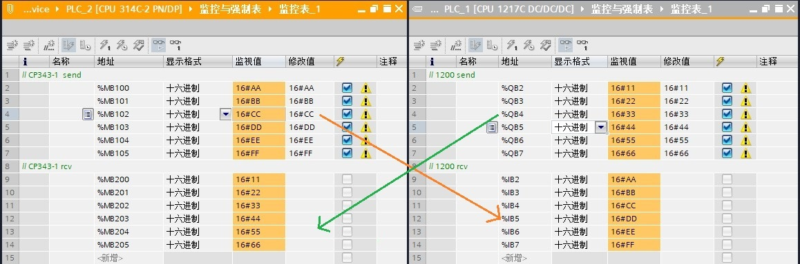
图 7 通信测试
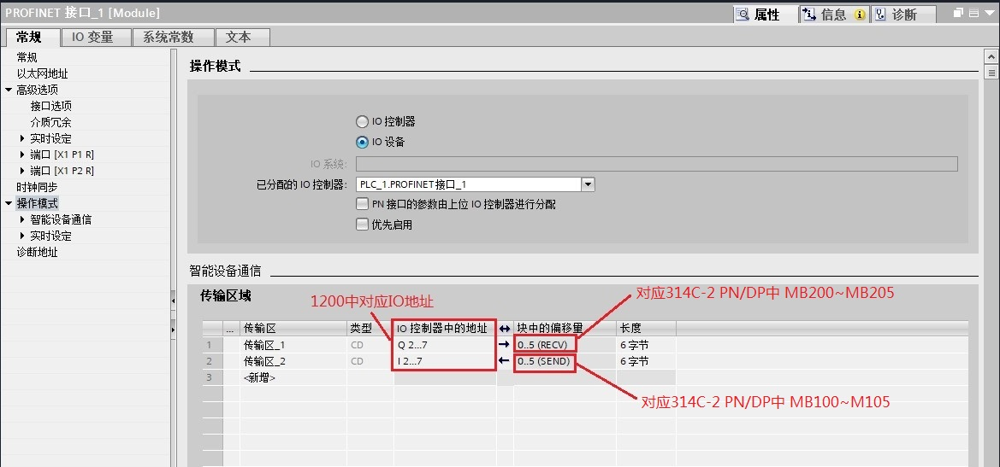
图 8 地址对应关系
从图中可以看到，当 CP343-1 作智能 IO 设备时，传输区块中的偏移量默认从 0 开始，无法修改。地址对应排列关系以逻辑地址大小为序。
在不同项目中的操作，即：1217C 作为 IO 控制器，CP343-1 作为 IO 设备在两个 TIA 项目操作，详细步骤如下。
S7-300 站点创建和第一种情况-->1-2 使用 Step7 V17 创建 S7-300 站章节内容相同，不再赘述。
CP343-1 作为 IO 设备，需要将其操作模式设置为 IO 设备，将 IO 设备分配选择未分配。在“智能设备通信”的“传输区”创建 IO 通信区，IO 数据长度分别为6个字节，如图 9 所示。
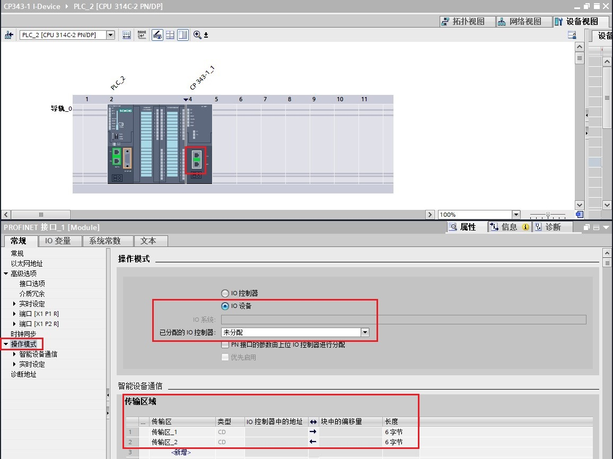
图 9 设置 CP343-1为 IO 设备和智能设备通信传输区域
编译该项目，在“智能设备通信”属性的下方，找到并点击“导出”按钮，根据提示将 GSD 文件自由选择路径导出（注意不要修改设备名称）。如图 10、11 所示。

图 10 导出 CP343-1的 GSD 文件
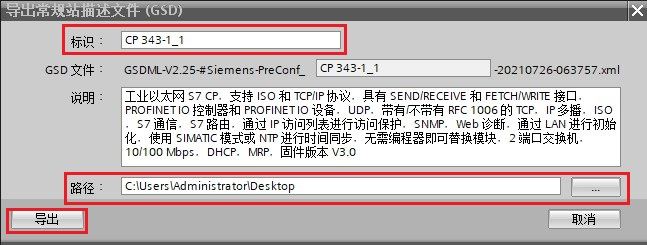
图 11 导出 CP343-1 的 GSD 文件
S7-1200 站点创建和第一种情况-->1-1 使用 Step7 V17 创建 S7-1200 站章节内容相同，不再赘述。
在 TIA 内导入 CP343-1 的 GSD 文件，路径为“选项”-->“管理通用站描述文件（GSD）”。 在源路径选择 IO-device 的 GSD 文件存放路径，选择并安装 GSD 文件。如图 12、13 所示。
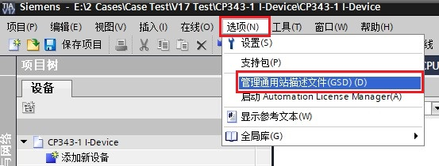
图 12 TIA 内安装 GSD 文件
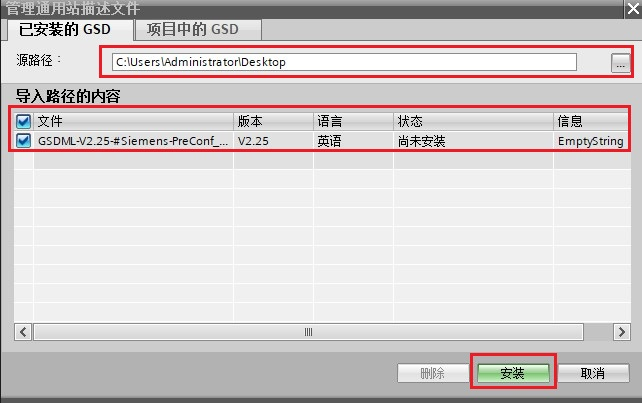
图 13 选择并安装 GSD 文件
在网络视图内，硬件目录中找到导入的 CP343-1 ，然后拖拽到网络视图内。点击 CP343-1 网口拖拽到 CPU 1217C 网口上，将 CP343-1 分配给IO 控制器 CPU 1217C 。如图 14 所示。

图 14 IO 控制器项目内组态 IO 设备
在网络视图内，双击 CP343-1 查看 IO 地址分配情况。如图 15 所示。

图 15 IO 设备的 IO 地址分配情况
分别将 S7-300 站和 S7-1200 站下载到各自的 PLC 中。
将 TIA 软件转至在线状态，在网络视图查看站点通信状况。若在线站点显示，则表示通信正常。如图 16 所示。

图 16 TIA 在线查看网络状态
S7-300 编程 和第一种情况-->1-3 S7-300 编程 章节内容相同，不再赘述。
检查无错误后，分别给两个站点新建监控表，添加通信数据区，监控。如图 17 所示。

图 17 通信测试
当 CP343-1 作智能 IO 设备时，传输区块中的偏移量默认从 0 开始，无法修改。在 IO 控制器 S7-1200 PLC 侧导入 GSD 文件后， IO 设备对应主站的 IO 地址可在网络视图内双击 IO 设备查看。如图 15 所示。
本例中，IO 设备传输区对应 IO 控制器 IB68~IB73 和 QB68~QB73。对应关系为：
S7-1200 PLC 的 IB68~IB73 <---> S7-300 PLC 的 MB100~MB105；
S7-1200 PLC 的 QB68~QB73 <--->S7-300 PLC的 MB200~MB205。
1217C 作为 IO 控制器，使用 Step7 V17 编程；CP343-1 作为 IO 设备 使用 Step7 V5.6 编程，详细步骤如下。
使用 STEP7 V5.6 创建一个新项目，并组态 CPU 314C-2 PN/DP, 添加 CP343-1 ，设置 IP 地址并添加子网，并确认设备名称，本示例中设备名称是 PN-IO 。如图 18 所示。
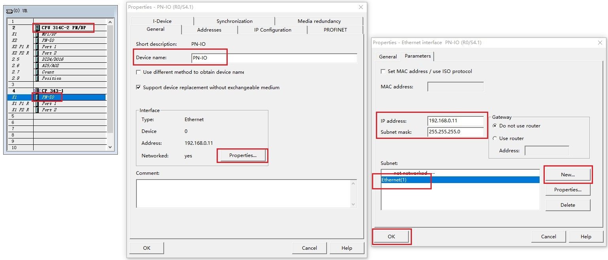
图 18 在新项目中插入 S7-300 站
CP343-1 作为 IO 设备需设置 IO 设备模式。在 PN-IO 中，选择 I-Device 页，勾选 I-device mode，并在“智能设备通信”的“传输区”创建 IO 通信区，IO 数据长度分别为 6 个字节，如图 19、20、21 所示。

图 19 设置 CP343-1 为 IO 设备和智能设备通信传输输出区域

图 20 设置 CP343-1 为 IO 设备和智能设备通信传输输入区域

图 21 智能设备通信传输区域配置完成
CP343-1 智能设备传输区域配置完毕后，生成并导出 GSD 文件。如图 22 所示。
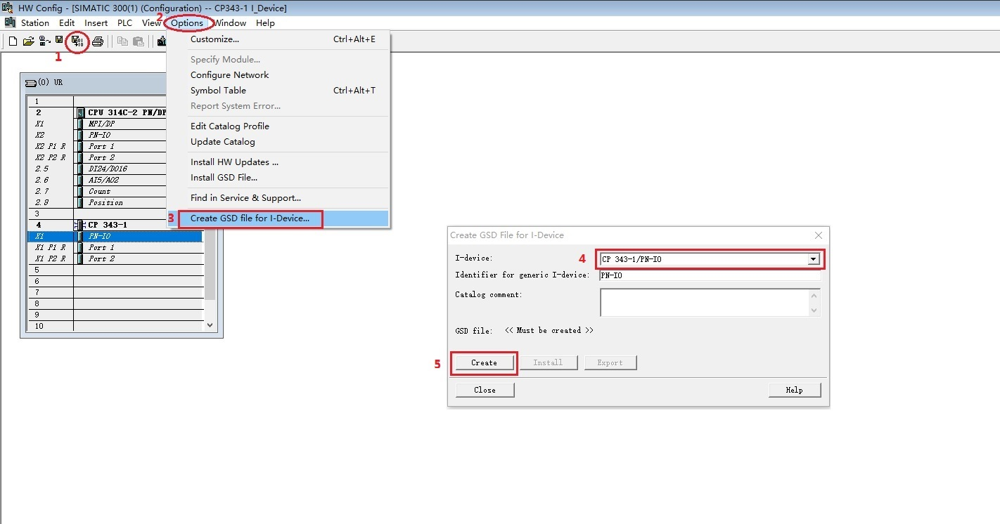
图 22 生成 CP343-1 的 GSD 文件
生成 GSD 文件后，点击导出并选择目标路径，如图 23 所示。
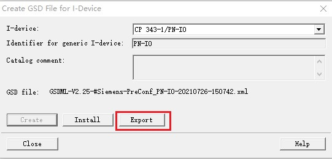
图 23 导出 CP343-1 的 GSD 文件
S7-1200 站点创建及 GSD 导入方法和第二种情况-->2-3 使用 Step7 V17 创建 S7-1200 站 章节内容相同，不再赘述。
在网络视图内，硬件目录中找到导入的 CP343-1，然后拖拽到网络视图内。点击 CP343-1 网口拖拽到 CPU 1217C 网口上，将 CP343-1 分配给 IO 控制器 CPU 1217C。如图 24 所示。

图 24 IO 控制器项目内组态 IO 设备
在网络视图内，双击 CP343-1 查看 IO 地址分配情况。如图 25 所示。
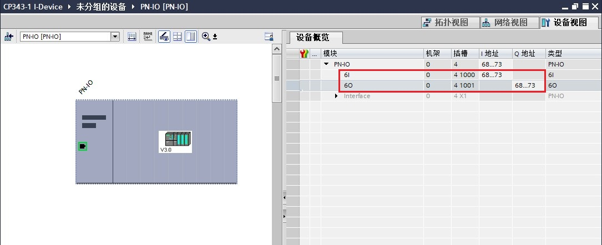
图 25 IO 设备的IO地址分配情况
分别将 S7-300 站和 S7-1200 站下载到各自的 PLC 中。
将 TIA 软件转至在线状态，在网络视图查看站点通信状况。若在线站点显示，则表示通信正常。如图 26 所示。
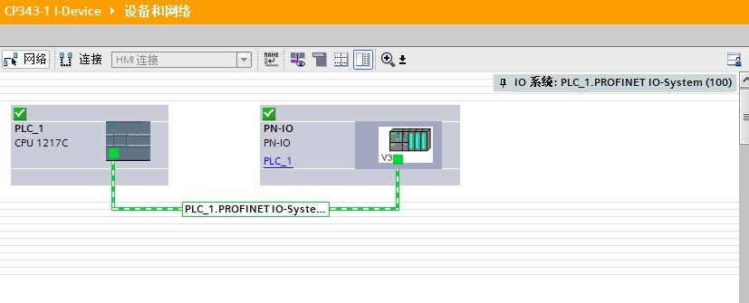
图 26 TIA 在线查看网络状态
本例中，CP343-1 作为 智能 IO 设备，要在 OB1 中编程调用 PNIO_SEND 和 PNIO_RECV 进行数据读写。如图 27 所示。
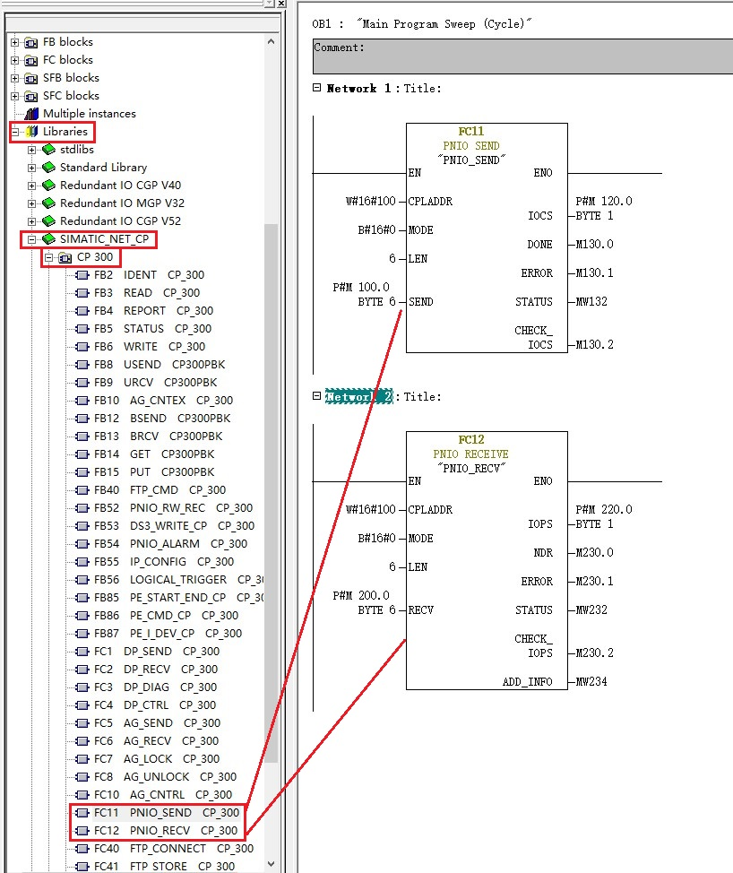
图 27 CPU314C-2 PN/DP 中编程
指令管脚参数说明：
CALL “PNIO_SEND” |
//调用 PNIO_SEND | |
| CPLADDR | ：=W#16#100 | // CP 模板 IO起始地址 |
| MODE | ：=B#16#0 | // 工作模式：当 CP343-1 仅作为 IO 控制器或 IO 设备时，设为0；当 CP343-1 同时作为 IO 控制器和 IO 设备时，设为 1 |
| LEN | ：=6 | // 要发送的数据区长度；该长度始终是从数据区地址0开始计算 |
| SEND | ：=P#M100.0 BYTE 6 | // 发送数据区 |
| IOCS | ：=P#M120.0 BYTE 1 | // 每一用户数据字节传送一个状态位。长度信息取决于LEN 参数中的长度。 以程序段 1 为例，共发送 6 个字节，每个字节需要 1 个位，所以共需要 6 位，即至少需要 1 字节。 |
| DONE | ：=%M130.0 | // 为 1 时，无错误完成该作业 |
| ERROR | ：=%M130.1 | // 为 1 时，有故障发生 |
| STATUS | ：=%MW132 | // 状态代码 |
| CHECK_IOCS | ：=%M130.2 | // 0: 所有 IOCS 均设置为 GOOD |
CALL “PNIO_RECV” |
//调用 PNIO_RECV | |
| CPLADDR | ：=W#16#100 | // CP 模板 IO起始地址 |
| MODE | ：=B#16#0 | // 工作模式：当 CP343-1 仅作为 IO 控制器或 IO 设备时，设为0；当 CP343-1 同时作为 IO 控制器和 IO 设备时，设为 1 |
| LEN | ：=6 | // 要接收的数据区长度；该长度始终是从数据区地址 0 开始计算 |
| RECV | ：=P#M200.0 BYTE 6 | // 发送数据区 |
| IOPS | ：=P#M220.0 BYTE 1 | // 每一用户数据字节传送一个状态位。长度信息取决于LEN 参数中的长度。 以程序段2为例，共接收 6 个字节，每个字节需要 1 个位，所以共需要 6 位，即至少需要 1 字节。 |
| NDR | ：=%M230.0 | // 为 1 时，无错误完成该作业 |
| ERROR | ：=%M230.1 | // 为 1 时，有故障发生 |
| STATUS | ：=%MW232 | // 状态代码 |
| CHECK_IOPS | ：=%M230.2 | // 0: 所有 IOPS 均设置为 GOOD |
| ADD_INFO | ：=%MW234 | // 附加诊断信息；具体请查看指令帮助信息 |
注意：CPLADDR是 CP343-1 的 IO 地址的起始地址，如图 28 所示。指令中使用 W#16#100，即256。
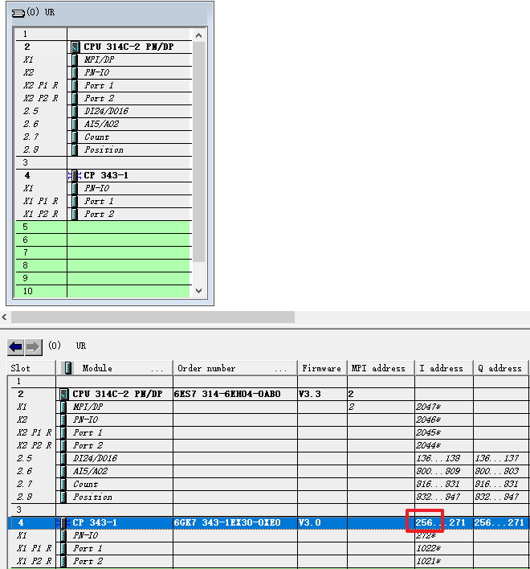
图 28 CP343-1 起始地址
检查无错误后，分别给两个站点新建监控表，添加通信数据区，监控。如图 28 所示。
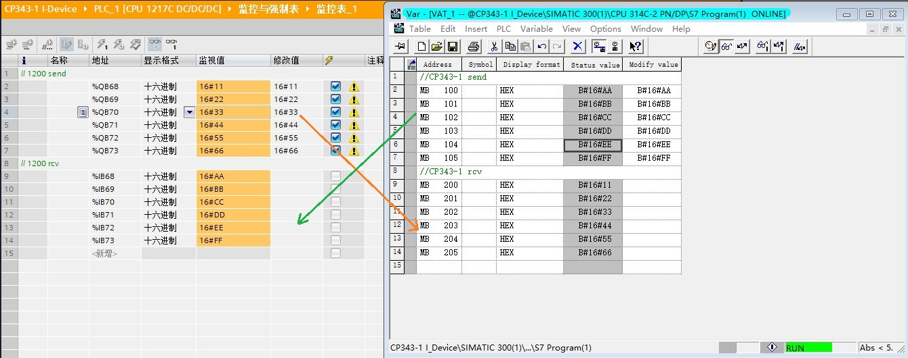
图 29 通信测试
当 CP343-1 作智能 IO 设备时，传输区块中的偏移量默认从 0 开始，无法修改。在 IO 控制器 S7-1200 PLC 侧导入 GSD 文件后， IO 设备对应主站的 IO 地址可在网络视图内双击 IO 设备查看。如图25 所示。
本例中， IO 设备传输区对应 IO 控制器 IB68~IB73 和 QB68~QB73 。对应关系为：
S7-1200 PLC 的 IB68~IB73 <--->S7-300 PLC 的 MB100~MB105；
S7-1200 PLC 的 QB68~QB73 <---> S7-300 PLC 的 MB200~MB205。